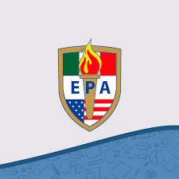
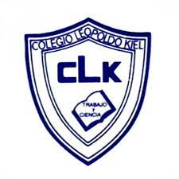
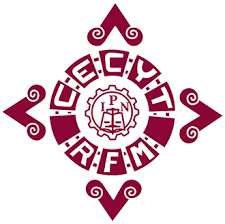

Angel Uriel Chávez Morones

Correo electrónico: angelchavezmorones@gmail.com
Correo electrónico: angelchavezmorones@gmail.com
| Logo | Nombre de la institución | Dirección | Años que curse | Título que obtuve |
|  | Escuela Primaria Americana | Calle 3 38, San Pedro de los Pinos
Benito Juárez,03800 Ciudad de México, CDMX |
2007-2013 | --- |
|  | Colegio Leopoldo Kiel | Carlos Dolci 42, Alfonso XIII
Álvaro Obregón, 01460 Ciudad de México, CDMX |
2013-2016 | Auxiliar contable |
|  | Centro de Estudios Científicos y Tecnológicos No.13
"Ricardo Flores Magón" |
Calz Taxqueña 1620, Paseos de Taxqueña
Coyoacán, 04250 Ciudad de México, CDMX |
2017-2019 | Técnico en Informática |
 |
Escuela Superior de Cómputo | ESCOM IPN, Unidad Profesional Adolfo López Mateos
07320 Ciudad de México, CDMX |
2019-Actualidad | --- |
Daniel Julius Bernstein (29 de octubre de 1971), conocido como Daniel J. Bernstein o djb, es un matemático, criptoanalista y programador que trabaja de profesor en la Universidad de Illinois en Chicago. Bernstein es el autor de los programas informáticos qmail, publicfile y djbdns. Es graduado en matemáticas por la Universidad de Nueva York (1991), y un doctorado también en matemáticas por la Universidad de California, Berkeley (1995) donde le tutorizó sus estudio Hendrik Lenstra. La educación secundaria la cursó en Bellport, un colegio público de Long Island. Bernstein propuso Internet Mail 2000 como sistema alternativo de correo electrónico para sustituir a Simple Mail Transfer Protocol (SMTP), Post Office Protocol (POP3) e Internet Message Access Protocol (IMAP). En 2004, dictó un curso de seguridad llamado "Agujeros de seguridad en UNIX". Los 16 miembros de la clase encontraron 91 nuevos problemas de seguridad en UNIX. Bernstein, por largo tiempo promotor de que el mejor método para promover el software seguro es la apertura total y fundador de la lista de correo «securesoftware», anunció públicamente 44 de dichos agujeros con código de muestra para explotarlo.1 En 2009 propuso DNSCurve, una mejora al sistema DNS que utiliza criptografía de curva elíptica para encriptar los paquetes de datos entre el cliente y el resolver DNS, entregando así confidencialidad, integridad y disponibilidad de la información.